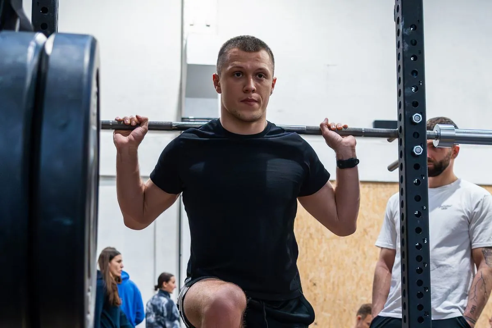
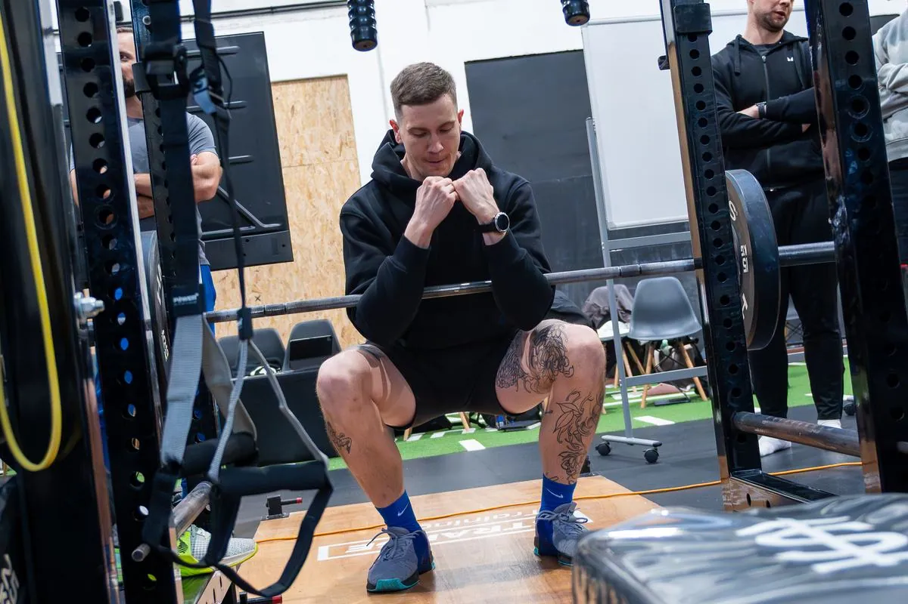
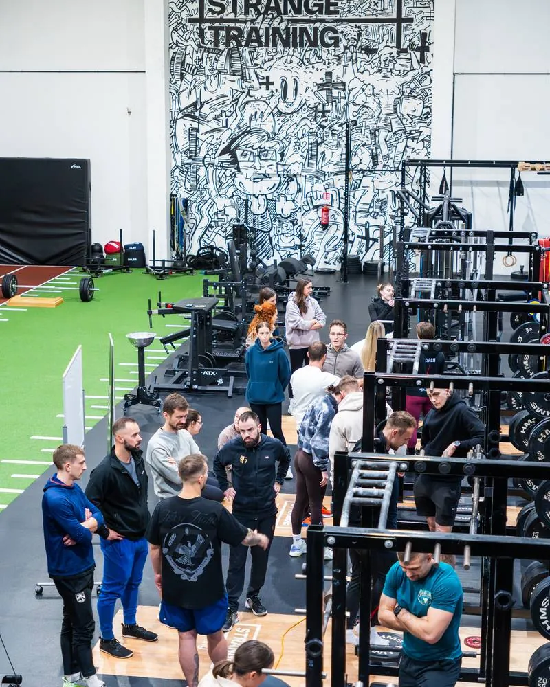
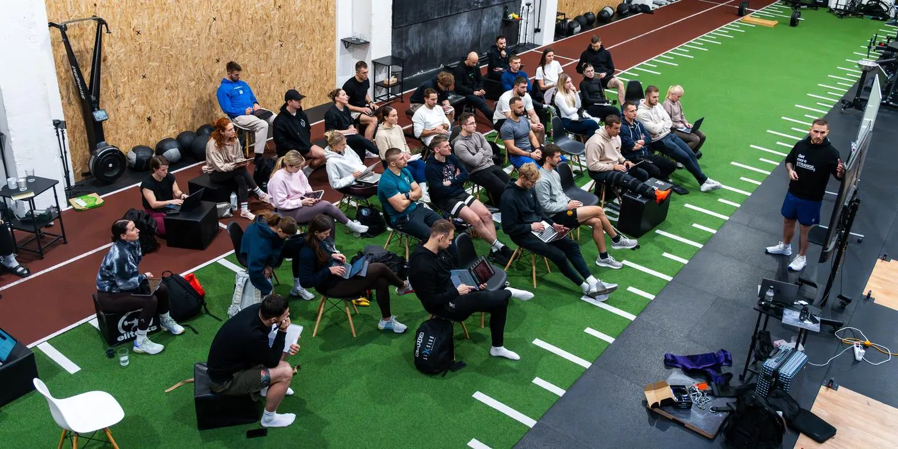
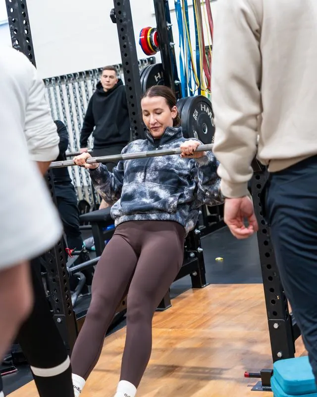
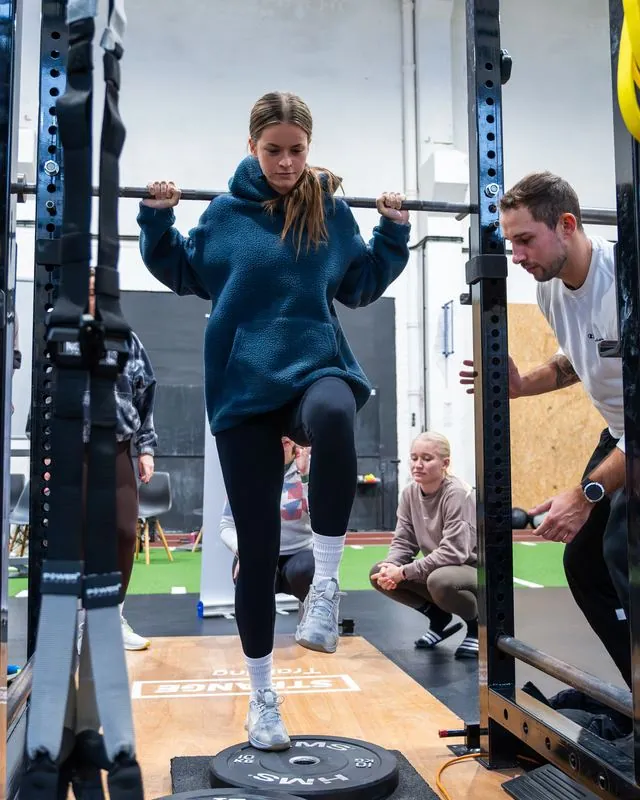
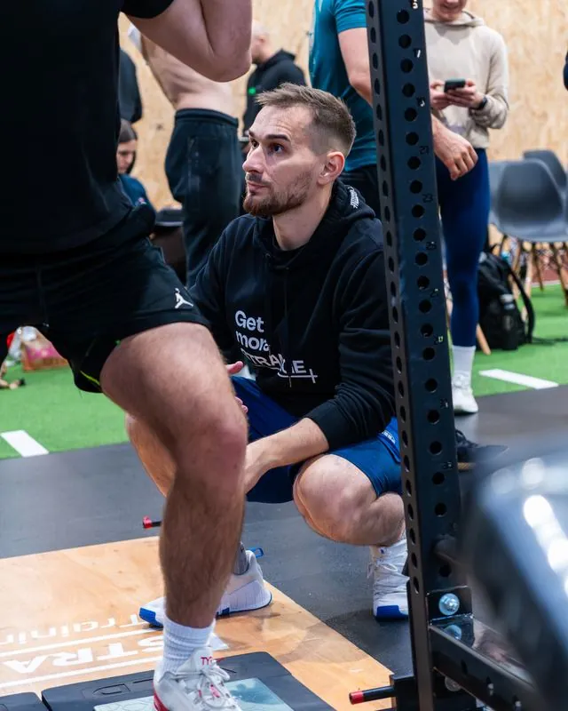
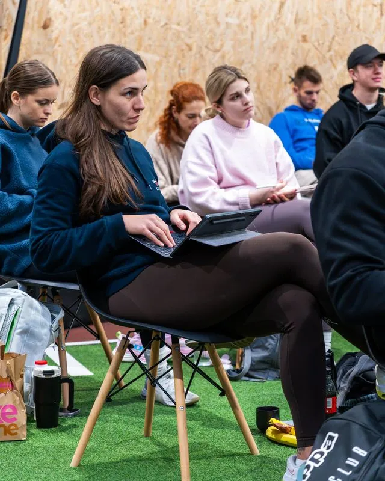
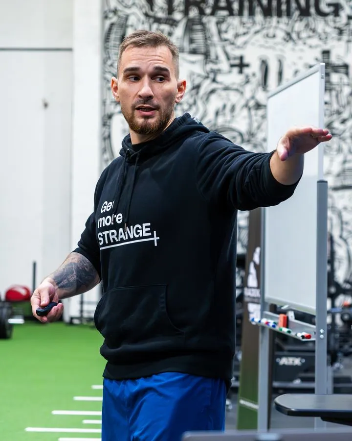

Svalové
kontrakce
Dvoudenní workshop pro trenéry a fyzioterapeuty
Nauč se pracovat s typy svalových kontrakcí tak, abys z každého tréninku dostal víc. Prakticky, na place, s metodami, které hned použiješ u klientů i sportovců.
Před nákupem se seznamte s obchodními podmínkami. Ochrana osobních údajů.
Podívej se, jak workshop vypadá v praxi.
Pro každého, kdo vede trénink druhých
Silově kondiční trenéři
Nové nástroje pro rozvoj síly, výkonu a odolnosti sportovců.
Fitness trenéři
Pestřejší a účinnější tréninky pro klienty všech úrovní.
Fyzioterapeuti
Propojení rehabilitace a silového tréninku v praxi.
Nadšenci a práce se sportovci
Pro každého, kdo chce silovému tréninku rozumět do hloubky.
Dva dny, dvě úrovně

SK Level 1
So 14. 11. 2026- Využití kontrakcí pro trénink sportovního výkonu, hypertrofie a rehabilitace
- Neurologická efektivita a specificita v silovém tréninku
- Programming a periodizace
- A další témata

SK Level 2
Ne 15. 11. 2026- Využití svalových kontrakcí pro mitochondriální hustotu a další pokročilé metody
- Izometrie pro sporty s dominancí běhu
- Metodiky rychlé relaxace a kontrakce
- A další témata

Odcházíš s know-how, ne jen s poznámkami
Tak to vypadá na place





Co říkají trenéři, kteří už byli
„Jedním slovem super! Prezentace byla top a informací tak akorát, abychom vše pobrali a nebyli přehlcení. Parádní byla praxe, kdy jsme si vše hned vyzkoušeli, a líbily se mi case studies. U nás není mnoho odborníků, kterým bych s mou praxí zaplatil za vzdělání, ale tady investice rozhodně nelituju. Big up!“
„Svalové kontrakce doporučuji. Základní principy svalových mechanismů zná každý trenér, ale Radek nám je dal do širších i užších souvislostí s odpovídající praxí.“
„Naprosto famózní. Radek umí cenné informace předat poutavou a živou formou. Díky uvolněné a podporující atmosféře si nové vědomosti zapamatuji mnohem lépe. Doporučuji všem trenérům, kteří se chtějí posunout dál.“
„Jedním slovem ÚŽASNÝ. Nechyběla zábava, teorie a hlavně praktické ukázky, které všichni ocenili. Prezentace je krásně zpracovaná, určitě se k ní budu vracet. Šíleně mě to namotivovalo se dál vzdělávat.“

Radek Rosa
Kondiční trenér a lektor zaměřený na rozvoj síly, kondice a sportovního výkonu. Spolupracuje s profesionálními a výkonnostními sportovci, mezi nimiž je řada mistrů České republiky, Evropy i světa.
Své zkušenosti pravidelně předává trenérům a fyzioterapeutům na odborných kurzech a workshopech. Vzdělání si dlouhodobě rozšiřuje i v zahraničí, kde absolvoval řadu certifikací a programů pod vedením předních světových expertů a výzkumníků v oblasti sportovního výkonu a silově-kondičního tréninku.
Zobrazit certifikaceZajisti si místo na workshopu
Před nákupem se seznamte s obchodními podmínkami. Ochrana osobních údajů.
Chceš jen jeden den? Cena je 7 000 Kč, napiš na info@radekrosastrong.cz.
Potřebuješ platbu rozdělit? Ozvi se na stejný e-mail a najdeme individuální řešení.
Časté otázky
Kde se workshop koná?
Strange Training, Šámalova 62a, 615 00 Brno-Židenice.
Mohu se zúčastnit pouze jednoho dne workshopu?
Ano, je možné absolvovat pouze jeden den. Cena za účast v jednom dni je 7 000 Kč. V případě zájmu nás kontaktujte na info@radekrosastrong.cz.
Jak dlouho workshop trvá?
Každý den přibližně 7–8 hodin, v závislosti na plynulosti programu a průběhu praktických částí.
Mohu se zúčastnit, i když nejsem trenér?
Ano. Workshopu se v minulosti účastnili i lidé, kteří se profesionálně nevěnují trénování ostatních. Přihlásili se především kvůli vlastnímu vzdělávání a hlubšímu pochopení principů, které mohou využít ve vlastním tréninku.
Je možné platbu rozdělit?
Rozdělení platby není standardní možností, ale chápeme, že každý může být v jiné situaci. Pokud jste například student nebo by pro vás bylo jednodušší platit ve více splátkách, napište na info@radekrosastrong.cz a pokusíme se najít individuální řešení.
Uvidíme se v Brně?
14.–15. 11. 2026 · 14 000 Kč za oba dny
Před nákupem se seznamte s obchodními podmínkami. Ochrana osobních údajů.